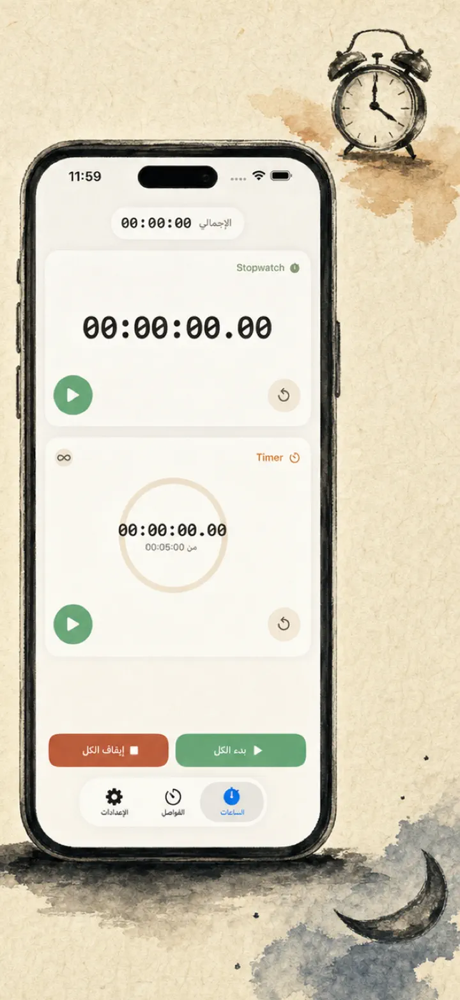
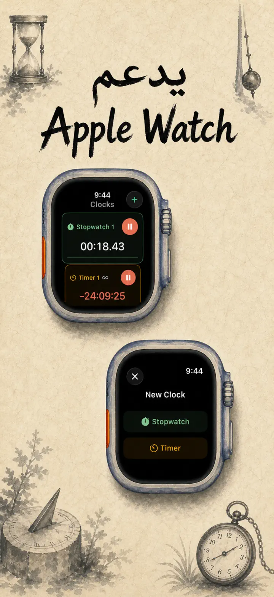
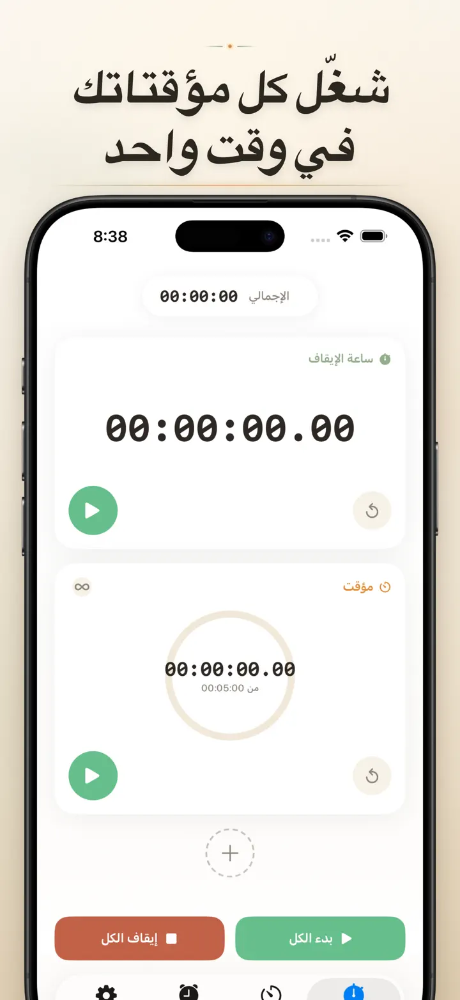
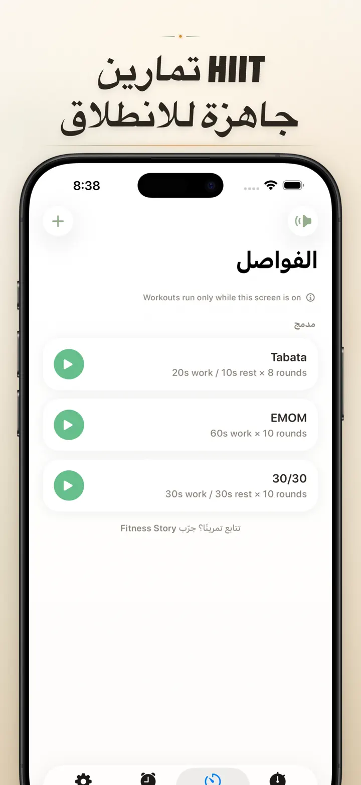
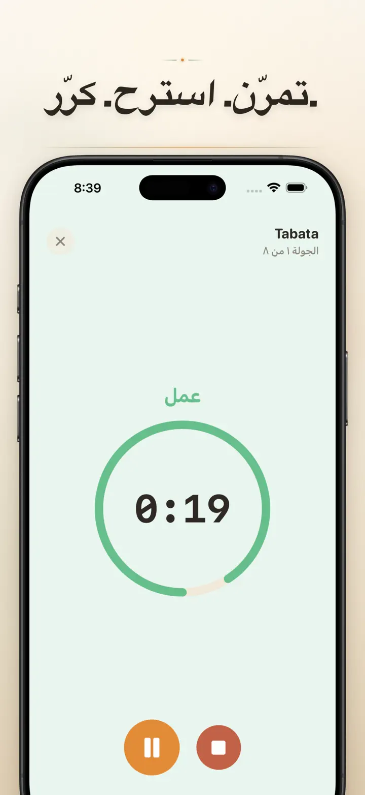
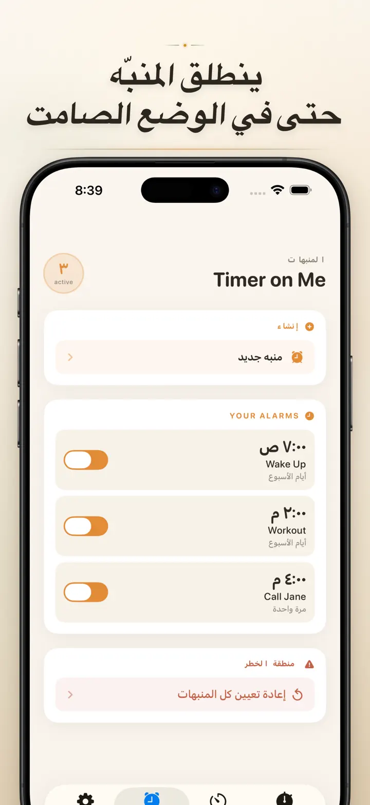

Timer on Me
مؤقت ومنبه وساعة إيقاف وHIIT
الآن مع المنبهات المؤرّخة: اضبط منبهاً لمرة واحدة لأي تاريخ ووقت، إلى جانب المنبهات المتكررة و50 مؤقتاً ودعم HIIT وTabata وApple Watch.
تنزيل من App Storeحول التطبيق
Timer on Me هو مؤقتك المتعدد وساعة الإيقاف لـ iPhone وiPad وApple Watch. حتى 50 مؤقتًا مستقلًا في الوقت نفسه، تدريبات فترات دقيقة، ومنبهات ترن فعلًا — حتى مع قفل iPhone أو إغلاق التطبيق.
المنبهات
- منبهات للاستيقاظ والتذكير بعناوين مخصصة وجداول لأيام الأسبوع
- مدعومة بـ AlarmKit — ترن حتى مع قفل iPhone أو إغلاق Timer on Me
- غفوة قابلة للتخصيص (3 / 5 / 9 / 15 / 30 دقيقة) أو بدون غفوة
- اختر من النغمات المدمجة أو استورد أصواتك الخاصة
- تفعيل أو إيقاف بنقرة واحدة من تبويب المنبهات المخصص
التدريب والفترات
- إعدادات جاهزة لـ Tabata وEMOM و30/30 — نقرتان وتنطلق
- محرر فترات مخصص: عمل واستراحة وجولات بالدقائق والثواني
- وضع تدريب بملء الشاشة مع تغيير اللون لكل مرحلة وخيار صامت
- إيقاف مؤقت وتخطٍ واستكمال في منتصف الجلسة دون فقدان التقدم
APPLE WATCH
- تطبيق watchOS أصلي حقيقي، وليس مجرد انعكاس من الهاتف
- ساعات إيقاف ومؤقتات متعددة تعمل على المعصم في الوقت نفسه
- ساعة إيقاف بدقة جزء من مئة من الثانية
- Complications مخصصة لوجه الساعة للانطلاق بنقرة واحدة
- يعمل باستقلالية تامة، حتى بدون iPhone بالقرب
50 مؤقتًا في الوقت نفسه
- حتى 50 مؤقتًا وساعة إيقاف مستقلة في جلسة واحدة
- بدء وإيقاف وإعادة ضبط بشكل فردي أو جماعي
- تكرار تلقائي للجولات الدورية
- تستمر المؤقتات بعد الصفر لتسجيل الوقت الإضافي
- أشرطة تقدم ملونة: أصفر عند 50% وأحمر عند 10%
- اسحب للترتيب، وأعطِ أسماء من اختيارك
تنبيهات موثوقة
- AlarmKit: المنبهات ترن حتى مع قفل iPhone أو إغلاق التطبيق
- Dynamic Island وLive Activity — متابعة التقدم بلمحة واحدة
- أدوات الشاشة الرئيسية: صغيرة ومتوسطة وكبيرة
- أصوات مدمجة: أجراس، طيور، هواتف كلاسيكية
- انقر للاستماع قبل الاختيار
- وضع "إبقاء الشاشة مضاءة" للجلسات الطويلة
خصّص وشارك
- أظهر أو أخفِ الأرقام العشرية والإجماليات والنسب المئوية
- احفظ الإعدادات وأعد الكتابة عليها، واستعدها بنقرة واحدة
- تصدير بصيغة CSV أو JSON أو نص عادي
- شارك مع الزملاء أو الطلاب أو المدرب
لـ iPhone وiPad وAPPLE WATCH
- تخطيط متكيف مع كل أحجام الشاشات
- Split View على iPad
- 34 لغة
مثالي لـ
- HIIT وTabata وCrossFit والتدريب الدائري
- جولات الملاكمة والكيك بوكسنغ والفنون القتالية
- Pomodoro والبكالوريا والدراسة المركّزة
- تحضير القهوة والشاي والبيض والمخبوزات وأوقات الفرن
- اليوغا والبيلاتس والتأمل وتمارين التنفس
- تدريبات العروض وممارسة الآلات الموسيقية
- الحصص والورش والأنشطة الجماعية
- ألعاب الطاولة والسهرات العائلية
نزّل Timer on Me وامسك زمام كل دقيقة — في الجيم أو العمل أو البيت.
سياسة الخصوصية: https://masawata.net/privacy-policy.html شروط الخدمة: https://www.apple.com/legal/internet-services/itunes/dev/stdeula/
لقطات الشاشة






Timer on Me
الآن مع المنبهات المؤرّخة: اضبط منبهاً لمرة واحدة لأي تاريخ ووقت، إلى جانب المنبهات المتكررة و50 مؤقتاً ودعم HIIT وTabata وApple Watch.
تنزيل من App Store